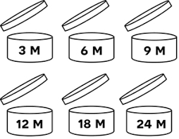
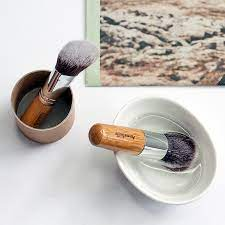
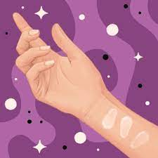

Poznaj sekrety zdrowej pielęgnacji 🤭...
~ Chcesz mieć piękną,lśniącą, zdrową cere? ~
Jesteś w dobrym miejscu!😇 Na tej stronie pokaże ci co powinieneś robić a co nie. Nie musisz sie o nic martwić!! To tylko kilka podstawowych zasad, a twoja cera bedzię taka jak nigdy dotąd! No to zaczynajmy!🥰
O to kilka podstawowych zasad o którch warto wiedzieć :
1.Częsta wymiana poduszki!
,,Zdjęcie pezykładowe jak powinno to wyglądać,, Zmieniaj poszewkę poduszki minimum raz w tygodniu i pierz ją w wysokiej temperaturze.2.Używaj oddzielnego ręcznika do wycierania twarzy.
3.Kontroluj daty ważności kosmetyków.
,,Zdjęcie pezykładowe jak powinno to wyglądać,,  zarówno do pielęgnacji jak i kolorowych i wyrzucaj te, których termin minął.4.Nigdy nie pożyczaj cudzych kosmetyków i akcesoriów do makijażu.
5.Regularnie myj pędzle i gąbki do makijażu.
,,Zdjęcie pezykładowe jak powinno to wyglądać,, 6. Wykonaj próbe alergiczną
,,Zdjęcie pezykładowe jak powinno to wyglądać,, Po zakupie nowego kosmetyku szczególnie jesli cera jest wrażliwa nałóż krem w niewidocznym miejscu (np. za uchem) i sprawdź jej stan po 28 godzinach.